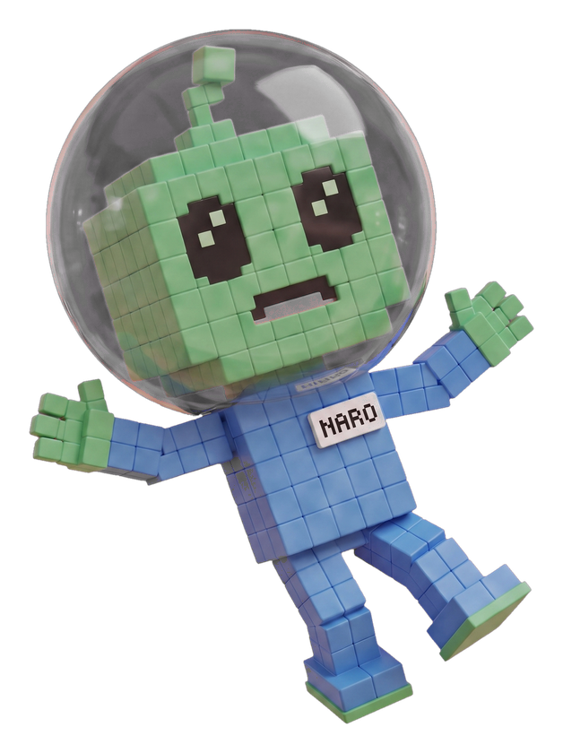

Error 404
This page drifted off.
Naro went looking and came back with nothing. The address exists, the page behind it does not.
Back to the work ↗
Error 404
Naro went looking and came back with nothing. The address exists, the page behind it does not.
Back to the work ↗